Featured / 2026.09
業務改善にAIをどう使う？中小企業がまず手をつける業務の見つけ方
業務改善にAIを使う最初の一手は「AIが効く業務」を見つけることです。効く業務・効かない業務の見分け方、営業・事務・経理・採用・カスタマー対応の部門別の使い方、効果が出やすくリスクが低い順の始め方、ありがちなつまずきを整理します。

業務改善にAIを使う最初の一手は「AIが効く業務」を見つけることです。効く業務・効かない業務の見分け方、営業・事務・経理・採用・カスタマー対応の部門別の使い方、効果が出やすくリスクが低い順の始め方、ありがちなつまずきを整理します。
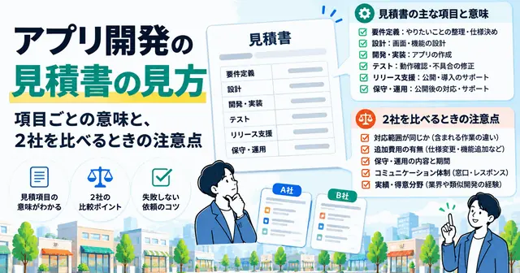
アプリ開発の見積書に並ぶ項目の意味と、2社の見積もりを同じ条件にそろえて比べる手順を整理しました。金額が大きく違うときに何が起きているか、書かれていないと後で揉めるところ、依頼前に発注側で決めておくことまでまとめています。
10 min read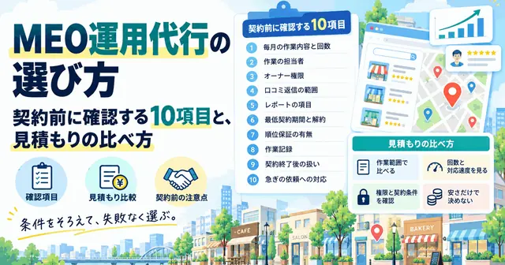
MEO運用代行を頼むときの判断基準を、契約前に確認する10項目として整理しました。任せられる作業と手元に残る作業の線引き、見積もりを作業の単位でそろえて比べる方法、オーナー権限や解約条件の見落としまでまとめています。
8 min read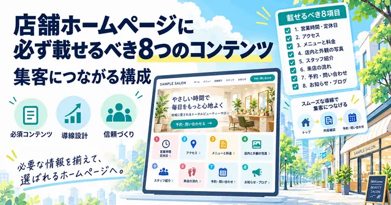
店舗ホームページに載せるべきコンテンツを8つに絞って整理しました。営業情報とアクセスの書き方、料金の見せ方、来店の流れ、予約導線の置き方、更新を続ける置き場所まで、公開前のチェック項目つきでまとめています。
6 min read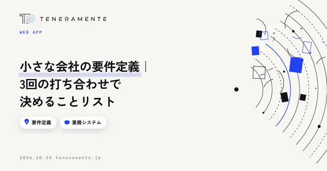
中小企業が業務システムを頼むときの要件定義を、3回の打ち合わせに分けて整理しました。1回目で今の作業を並べ、2回目で画面と項目を決め、3回目で優先順位と完成の形を決める——各回で決めることと、持っていくもの、よくある失敗までまとめています。
6 min read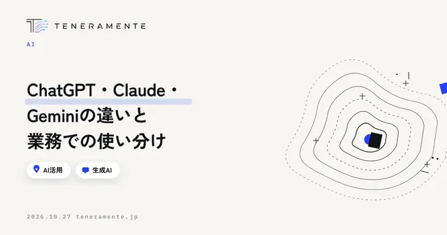
ChatGPT・Claude・Geminiの違いを、性能の優劣ではなく業務での使い分けの観点から整理しました。3つに共通していること、一般的な傾向としての違い、選ぶときに確認する項目、社内で使う前に決めること、2週間で試す手順までをまとめています。
8 min read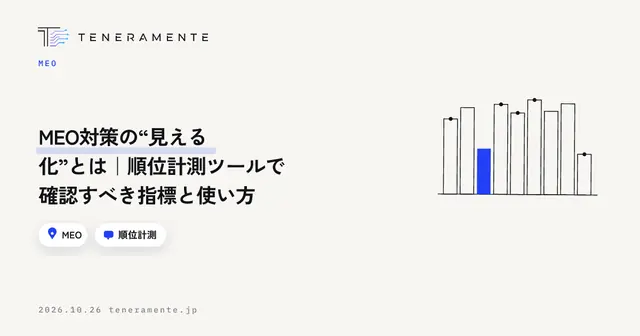
MEO対策の成果を数字で確認するための順位計測ツールの使い方をまとめました。1つの順位だけを見ても判断できない理由、地点を分けて測るジオグリッドの考え方、計測で確認すべき指標、測る語と地点の決め方、動いた数字の読み方までを整理しています。
7 min read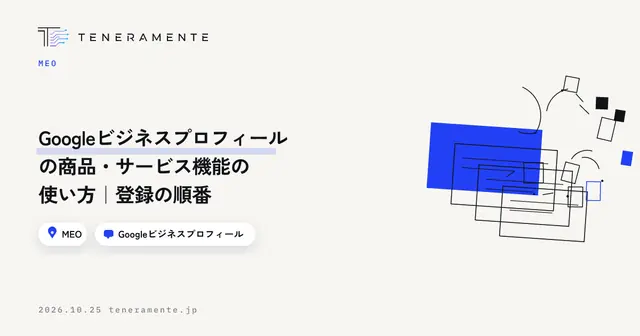
Googleビジネスプロフィールの「商品」「サービス」機能は、何を扱う店舗かを検索した人に伝える枠です。どちらが自分の店舗で使えるかの確認方法、サービス名の決め方、登録の順番、説明文に書くことと書かないこと、登録後に起きるずれの直し方までを整理しました。
6 min read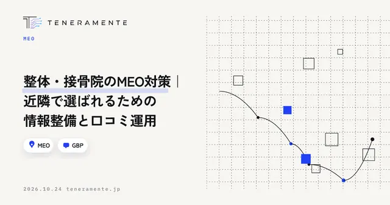
整体・接骨院のMEO対策を、広告の制限に配慮しながら進める手順をまとめました。店舗情報に事実として書ける項目、初回の不安を消す料金と所要時間の出し方、施術後の口コミ依頼と返信の線引き、施術中でも取りこぼさない予約の受け口まで整理しています。
7 min read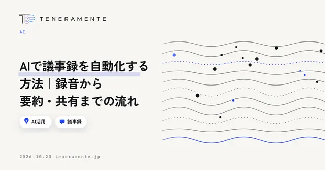
AIで議事録を自動化する手順を、録音・文字起こし・要約・確認・共有の5工程に分けて整理しました。録音の取り方で精度が決まる理由、会議の種類ごとに要約の指示を固定する方法、人が必ず確認する3か所、社内で回す前に決めておく情報の扱いまでまとめています。
7 min read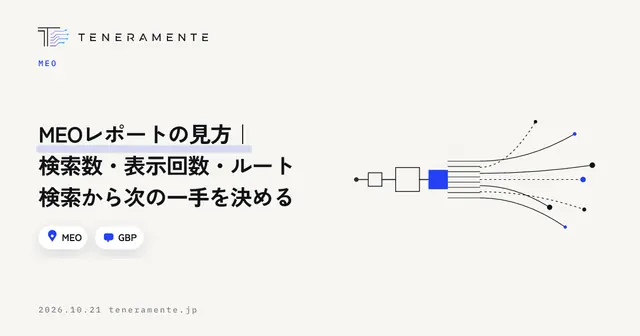
MEOレポートの数字を見ても次の手が決まらない、という状態を抜けるための読み方をまとめました。検索語句・閲覧数・ルート検索をどの順番で見るか、どこで止まっているかの特定方法、月次比較の注意点、レポートに固定する項目まで整理しています。
7 min read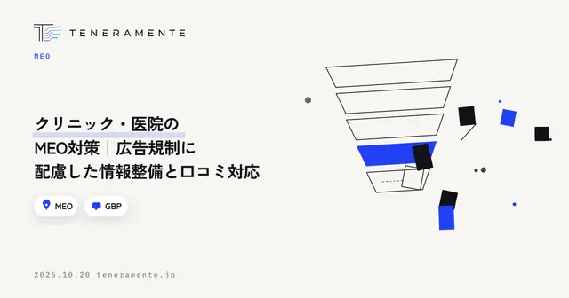
クリニックや医院のMEO対策を、医療広告の規制に配慮しながら進める手順をまとめました。診療時間・診療科目・自由診療の書き方・写真・口コミ返信の順番と、返信で個人の診療内容に触れないための線引きまで整理しています。
7 min read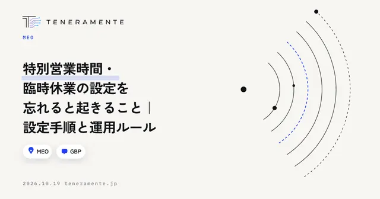
Googleビジネスプロフィールの特別営業時間と臨時休業の設定手順を、忘れたときに何が起きるかから逆算して整理しました。祝日・年末年始の入れ方、投稿との使い分け、年1回まとめて入れる運用ルールまでまとめています。
7 min read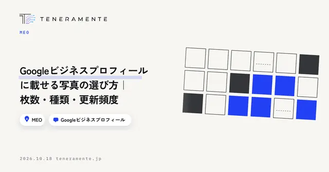
Googleビジネスプロフィールの写真は、きれいさより「来店前の疑問に答えているか」で選びます。先に埋める写真の種類、枚数の決め方、スマホで撮るときの確認項目、更新の周期、やってはいけない使い方までを整理しました。
7 min read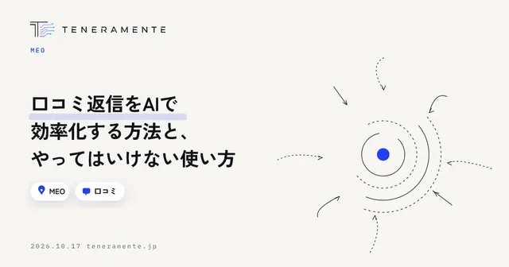
口コミ返信をAIで効率化するには、下書きまでをAIに任せ、事実確認と判断を人が持つ形にします。渡す前に決めておく条件、プロンプトの型、投稿前に見る4つの確認、そして規約に触れる使い方までを整理しました。
7 min read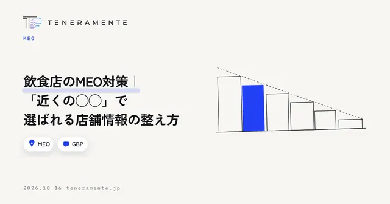
飲食店のMEO対策で先に直すべき項目を、来店前にお客様が確かめることから逆算して整理しました。営業時間・メニュー・属性・写真・口コミ返信の優先順位と、月1回の確認のしかたまでまとめています。
6 min read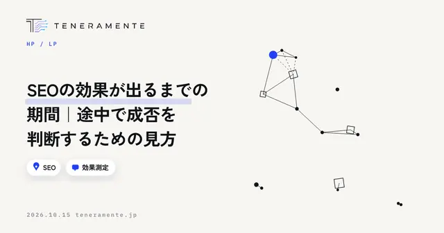
SEOの効果が出るまでの期間は、サイトの状態と狙う検索語によって変わります。順位より手前で動く数字の順番と、途中で続けるか見直すかを決めるためのチェックポイントを整理しました。
6 min read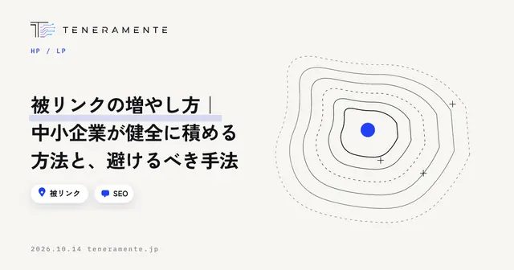
被リンクの増やし方を、中小企業が無理なく続けられる経路の作り方から、購入や相互リンクを避けるべき理由、依頼するときの進め方、効果の確認方法までまとめました。本数を追う前に読んでいただきたい考え方の話です。
7 min read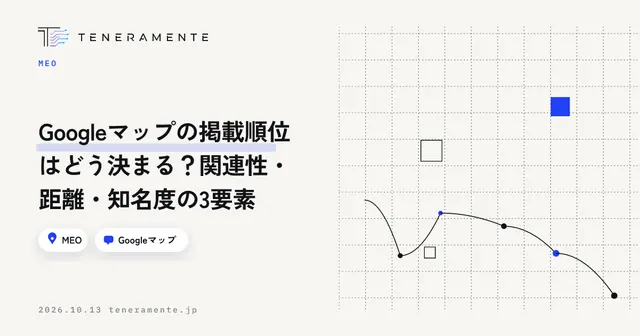
Googleマップの掲載順位を決める関連性・距離・知名度の3要素を、店舗が自分で動かせる部分と動かせない部分に分けて解説します。どの要素が足りていないのかを確かめる手順と、順位についてよくある誤解もまとめました。
7 min read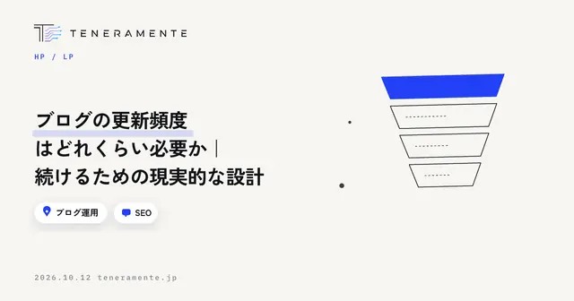
ブログの更新頻度をどう決めるかを、SEOに効く部分と効かない部分の切り分け、自社に必要な本数の出し方、週1・月2・月1それぞれの目安、更新が止まる原因と対処までまとめました。本数を決める前に読んでいただきたい設計の話です。
7 min read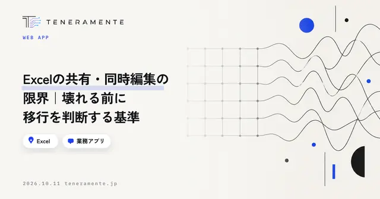
Excelの共有・同時編集で起きるトラブルを、原因と移行の判断基準から整理しました。共有方法ごとにできることの違い、移行を考えはじめる5つのサイン、Excelのままで改善できる範囲、移行の順番までをまとめています。
7 min read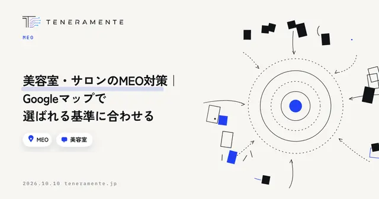
美容室・サロンのMEO対策を、新規客がGoogleマップで店を選ぶときに見ている順番から整理しました。プロフィールで先に埋める項目、メニューと料金の見せ方、写真の優先順位、口コミの扱い、月1回の確認までをまとめています。
9 min read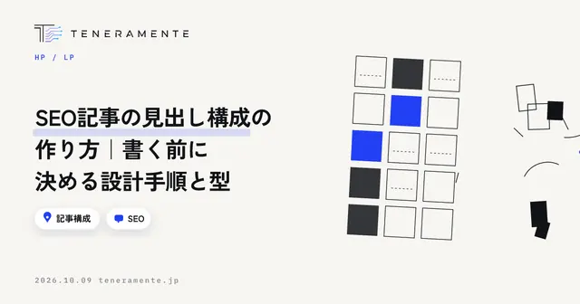
SEO記事の見出し構成の作り方を、書く前に決めることから4つの手順、使える構成の型、見出しの文の書き方、公開前の確認までまとめました。本文を書き始める前に順路を決めるための設計手順です。
7 min read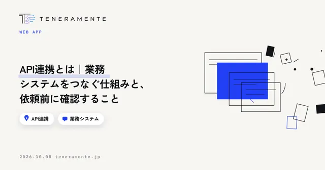
API連携とは何かを、業務システムをつなぐ仕組みの話として整理しました。手作業のデータ移しとの違い、CSVやRPAとの使い分け、できること・できないこと、依頼前に確認する6項目までまとめています。
7 min read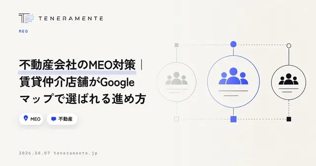
不動産会社のMEO対策で、賃貸仲介の店舗が先に手を付ける項目を順番に整理しました。店舗情報の埋め方、写真の選び方、口コミの依頼と返信の型、月1回の確認項目まで、店舗でそのまま使える形でまとめています。
7 min read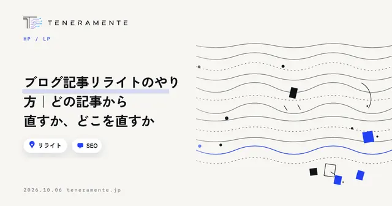
ブログ記事リライトのやり方を、直す記事の選び方から見る数字、直す場所の優先順位、本文の直し方、公開後の確認までを手順で整理しました。新しく書く前に効果が出やすい記事を見つける考え方に重点を置いています。
8 min read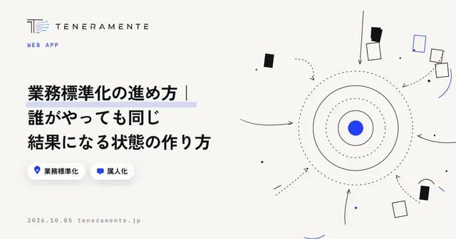
業務標準化の進め方を、対象の選び方からばらつきの確かめ方、決める粒度、守られる状態にする仕組み、改訂の続け方まで手順で整理しました。マニュアルを作る前に決めておくことに重点を置いています。
7 min read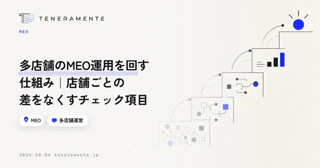
多店舗のMEO運用で店舗ごとに質がばらつく原因と、本部でそろえる項目・店舗に任せる項目の分け方を整理しました。月1回のチェック項目と、店舗別に数字を比べるときの見方までまとめています。
8 min read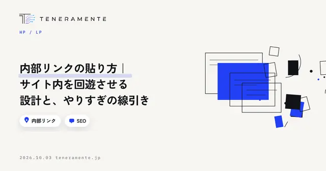
内部リンクの貼り方を、どのページを中心に置くかの設計から、アンカーテキストの書き方、やりすぎの線引きまで手順で整理しました。記事を増やしても回遊が増えない状態から抜け出すための判断基準をまとめています。
7 min read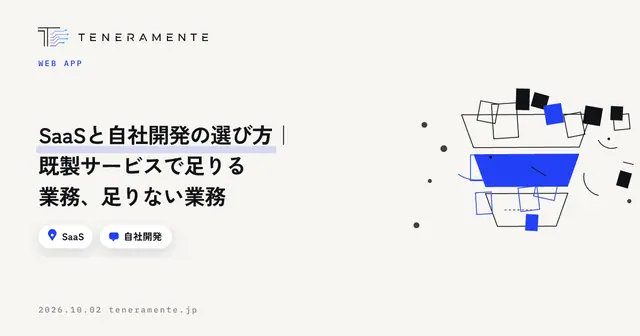
SaaSと自社開発の選び方を、機能の比較ではなく「業務の性質」から整理しました。既製サービスで足りる業務の見分け方、自社開発を検討する条件、6つのチェック項目、費用と期間の読み方までまとめています。
7 min read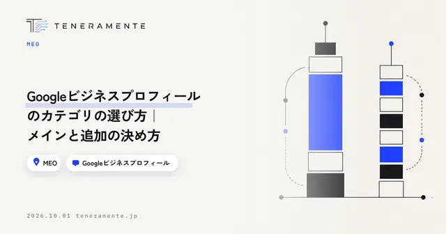
Googleビジネスプロフィールのカテゴリの選び方を、メインカテゴリと追加カテゴリの役割の違いから整理しました。判断基準・迷いやすいケース・変更するときの手順までまとめています。
6 min read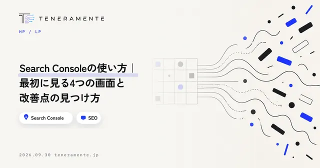
Search Consoleの使い方を、最初に見るべき4つの画面と、そこから改善点を見つける手順に絞って整理しました。入れたまま使えていない状態から抜け出すための、見る順番と頻度までまとめています。
8 min read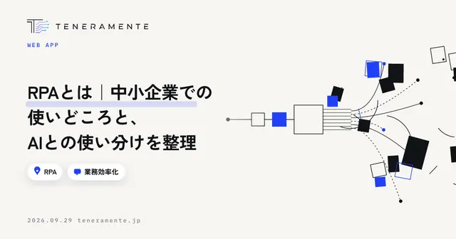
RPAとは何か、中小企業でどの業務に向くのかを、AIとの違いと使い分けの基準まで含めて整理しました。入れる前に決めておくこと、止まったときに誰も直せない状態を避ける進め方までまとめています。
7 min read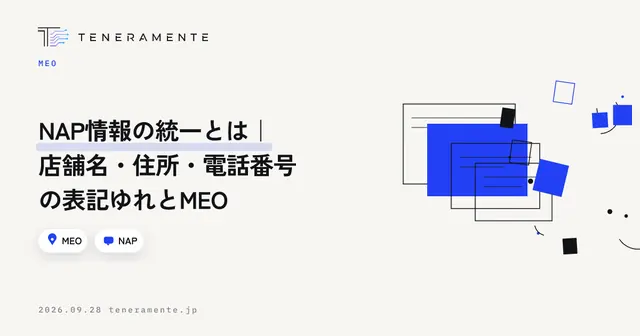
NAP情報の統一とは何か、表記ゆれがMEOにどう影響するのかを整理しました。正本の決め方、掲載先の洗い出し、直す順番、直したあとの確認まで、今日から手を付けられる手順でまとめています。
6 min read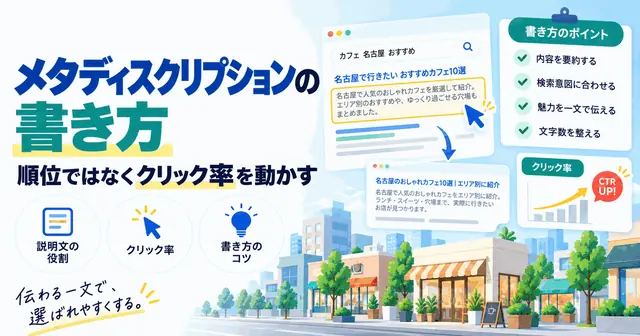
メタディスクリプションの書き方を、文字数の目安・ページ種別ごとの中身・よくある失敗の3点から整理しました。検索結果で書き換えられる理由と、公開後に見直す手順まで、今日から手を付けられる形でまとめています。
6 min read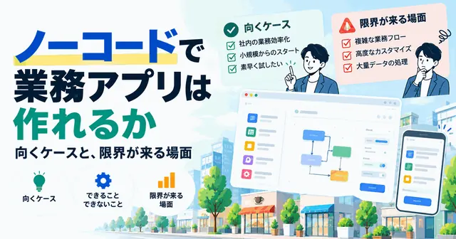
ノーコードで業務アプリはどこまで作れるのか、向いているケースと限界が来る場面を整理しました。作り始める前に決めておくこと、乗り換えを判断する基準まで、自社で試す前に読んでおきたい内容をまとめています。
6 min read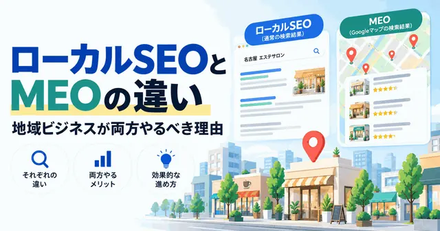
ローカルSEOとMEOは何が違うのか、言葉の定義・表示される場所・評価される要素の3点から整理しました。地域ビジネスが両方に取り組むべき理由と、どちらから手をつけるかの判断基準までまとめています。
6 min read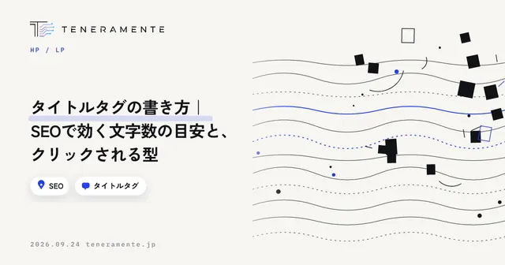
タイトルタグの書き方を、文字数の目安・主キーワードの置き場所・クリックされる型の3点から整理しました。Googleに書き換えられたときの考え方と、公開後の見直し手順まで、今日から直せる形でまとめています。
7 min read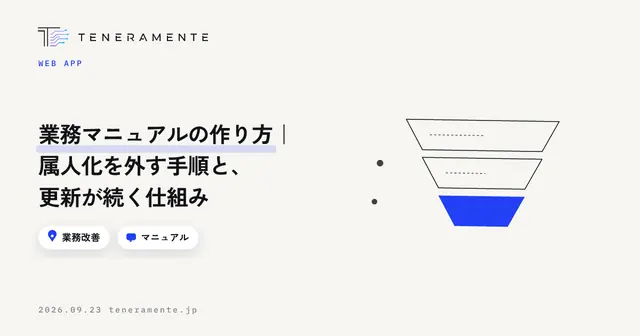
業務マニュアルは、書く前に読み手と範囲を決め、判断の基準まで書き出すと属人化が外れます。作る順番、1本あたりの項目、更新が止まらない仕組みまで、明日から着手できる形でまとめました。
7 min read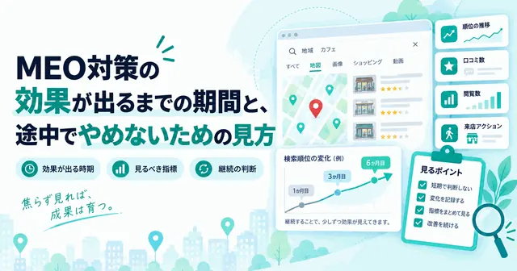
MEO対策の効果が出るまでの期間は、店舗の状況と競合の数で変わります。何週間で順位が動くかではなく、先に動く数字から順に確認する見方と、続けるか見直すかの判断基準を整理しました。
7 min read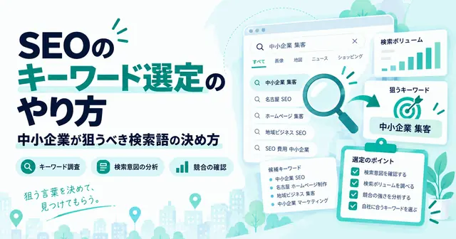
キーワード選定のやり方は、場面を決め、候補を集め、意図で仕分け、基準で絞り、ページに割り当てるという順番で進みます。検索ボリュームの見方と、数字に振り回されないための判断基準をまとめました。
7 min read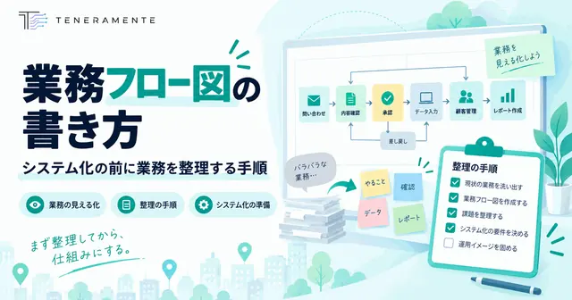
業務フロー図は、記号の知識よりも書く順番で決まります。範囲と粒度を先に決め、終わりから逆にたどる手順で書けば、システム化の相談に持っていける1枚になります。書き方と、よくある失敗をまとめました。
6 min read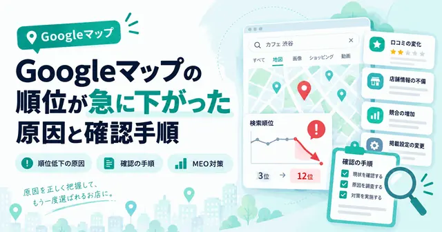
Googleマップの順位が急に下がったとき、原因は自社で加えた変更・プロフィールの状態・外側の変化のどれかに収まります。焦って情報を触る前に確認する順番と、原因ごとの直し方をまとめました。
8 min read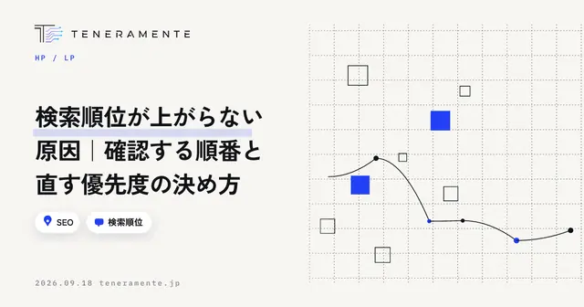
対策しているのに検索順位が上がらないとき、原因の候補は多くありません。順位の見方を疑う、インデックスを確かめる、検索意図とのずれを見る、サイト側の作りを見る。この順番で確認し、直す優先度を決めるまでを整理しました。
7 min read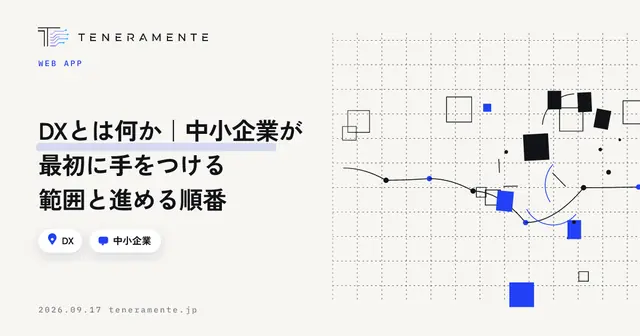
DXとは何かを、中小企業の現場の言葉で整理しました。デジタル化との違い、最初に手をつける範囲の決め方、進める順番、対象業務を選ぶ判断基準、止まってしまうときの共通点まで、明日から動ける形でまとめています。
6 min read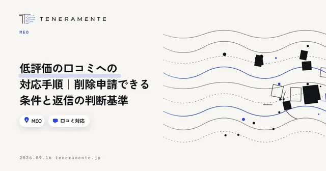
低評価の口コミが付いたとき、削除を申請すべきものと、返信で対応すべきものは分かれます。Googleのポリシーに照らした判断の基準、削除を報告する手順、通らなかった場合の現実的な打ち手までを整理しました。
6 min read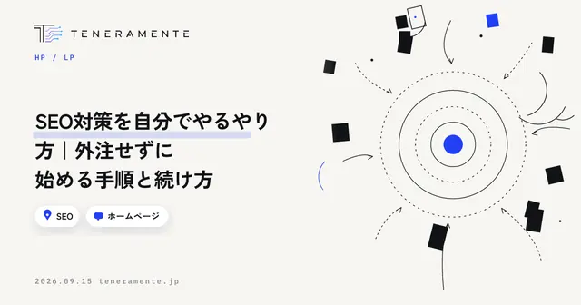
SEO対策は、外注しなくても自分で始められます。何から手を付けるかの順番、キーワードの決め方、タイトルと見出しの直し方、技術面で最低限そろえることを、今日から回せる手順として整理しました。
6 min read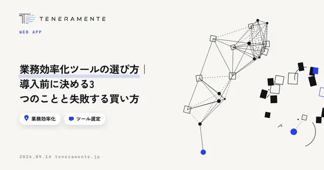
業務効率化ツールを比較表から選び始めると、たいてい失敗します。機能の多さではなく、誰のどの作業をどこまで変えるのかを先に決めることが選定の中心です。導入前に決める3つのこと、比べるときに見る項目、よくある失敗の形を整理しました。
6 min read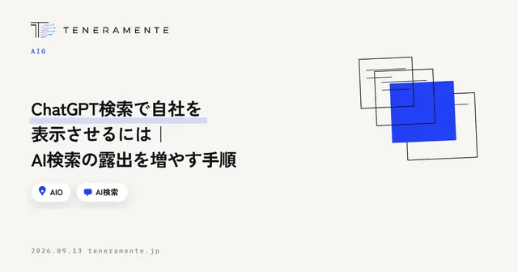
ChatGPTやPerplexityに社名やサービス名を尋ねたとき、自社が出てこない。その原因は順位ではなく、AIが参照できる情報が揃っていないことにあります。現状の確かめ方、出てこない原因の切り分け、情報の揃え方を手順で整理しました。
7 min read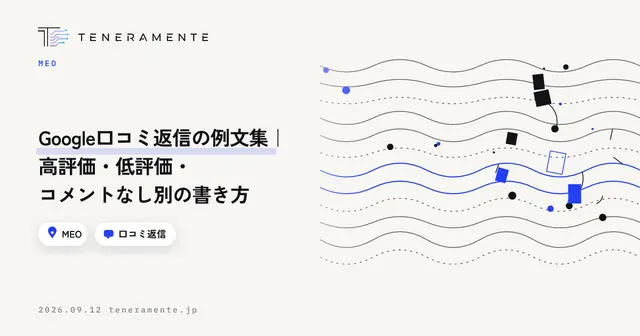
口コミの返信は、投稿した本人だけでなく、これから来店を検討している人が読んでいます。どの返信にも共通する4つの要素、高評価・低評価・コメントなしの3パターン別の例文、そして続けるための運用の決め方を整理しました。
6 min read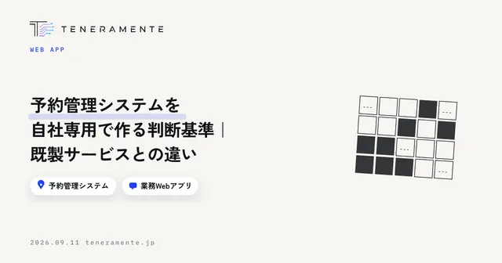
既製の予約サービスが自社の受付ルールに合わなくなったとき、自社専用の予約管理システムを作るべきかどうかの判断基準を整理します。既製との違い、最低限必要な機能、着手前に決めること、費用と期間の考え方まで。
6 min readGoogleビジネスプロフィールの投稿ネタが思いつかないのは、ネタ切れではなく探し方が決まっていないからです。投稿の4つの種類、業種別のネタ元の決め方、続けられる頻度への落とし方を整理しました。
6 min readホームページのリニューアルのタイミングは、見た目の古さではなく「今のサイトが機会を落としているか」で判断します。作り直しを検討すべき7つのサイン、まだ全面改修が不要な場合の見分け方、着手前に決めておくことを整理しました。
6 min readMEO対策は費用をかけずに自分で始められます。Googleビジネスプロフィールの整備から口コミ・投稿の運用まで、今日から回せる7つの手順と、自分でやるときに起きやすい失敗、任せたほうがよい範囲の線引きを整理しました。
6 min read業務アプリを内製するか外注するかは、「作れるか」ではなく「作った人がいなくなっても続けられるか」で決まります。内製が向く業務と外注が向く業務、ノーコードの限界が出る場所、切り替えを考える5つの目安を整理しました。
6 min read生成AIの社内ルールは、長い規程を作るより「入力してよい情報の線引き」「使ってよいツール」「出力物の確認責任」を1枚に収めたほうが守られます。テンプレートに載せる10項目と、それぞれの決め方を具体例つきで整理しました。
6 min readMEO対策の費用相場を調べても金額の幅が広く、判断しづらいのは、月額に含まれる作業が会社ごとに違うためです。料金を初期設定・投稿・口コミ返信・順位計測といった作業単位に分解し、自社運用と代行の分かれ目、見積書の読み方を整理します。
5 min read業務改善AIアプリの開発費用は「初期費用」と「月額」に分けて読むと判断がぶれません。初期費用30万円〜に何が含まれ何が月額なのか、期間の目安の考え方、費用を左右する要因、見積もりの読み方、3回のミーティングで小さく始める進め方を解説します。
6 min readAI業務改善は「棚卸し→標準化→AIで下書き・判断支援→自動化→専用アプリ化」の5段階で進めると失敗しにくくなります。各段階でやること、次へ進む判断基準、やめどきを、定型業務を多く抱える中小企業向けに整理します。
5 min readAI開発企業を選ぶときは、実績の派手さや価格より「業務を理解しようとするか」「小さく試せるか」「相談から運用まで一貫か」などの7点で比べると失敗が減ります。大手SIer・フリーランス・地域の開発会社の違いと、見積もり比較の見方も解説します。
6 min readAIツール開発を外注する前に、対象業務・入力と出力・AIに任せる範囲・使う人・データの所在・失敗時の扱い・完成の定義の7項目を決めておくと、見積もりのブレと手戻りが減ります。相談に持っていくものと、見積もりで確認する点も整理しました。
6 min readClaude Codeでのアプリ開発は、触れる試作が早く出て、仕様の擦り合わせが画面ベースになり、修正の往復が軽くなります。発注側が確認すべきテスト・レビュー・保守の体制、費用と期間への影響の考え方、向く案件と向かない案件を整理しました。
5 min read法人向けAI研修は“受けて終わり”になりがちです。研修が定着しない典型パターン、カリキュラムに必ず入れるべき4つの要素、研修会社の比較ポイント、翌日から使い続けるための定着設計を、中小企業の経営者向けに整理します。
6 min read「業務改善のためにAIでアプリを作りたい」「AIツール開発を頼める会社を探している」——そんな方へ。AI業務改善アプリ開発の進め方、費用相場の考え方、Claude Codeで変わった開発スピード、失敗しないAI開発企業の選び方までをまとめた実践ガイドです。
5 min read「近くの○○」で選ばれるお店になるためのMEO対策を、基礎から徹底解説。自分でできる施策のチェックリスト、費用相場の目安、業者選びで失敗しないポイントまで、この1本で全体像がつかめます。
6 min readChatGPTやPerplexity、Google AI Overviewsが「答え」を返す時代。検索結果に並ぶのではなく、AIに“引用される”側へ。AIO（AI最適化）の考え方と、今日から打てる具体策をまとめました。
4 min read「Excelが限界」「既製SaaSが合わない」「属人化が止まらない」——その3つを、御社専用のアプリで解く。導入の判断軸から費用・進め方・失敗回避まで、業務をアプリにするための実践ガイドです。
4 min readGoogleマップの順位は「作って終わり」では守れません。NAPの点検、投稿・写真、口コミ対応、インサイト確認——毎月見るべき項目を、店舗運用の現場目線でチェックリストにまとめました。
3 min readGoogleの口コミは、MEOの順位にも来店の意思決定にも効く重要な資産です。規約違反にならない増やし方7選と、依頼時の声かけ、低評価への返信の考え方までを丁寧に解説します。
5 min read「AIを使いたいが、どこから始めれば？」——その問いで止まっている会社は少なくありません。効く業務の見分け方、スモールスタートの設計、RAGという選択肢まで、導入の最初の一歩を現場目線で解説します。
3 min read構造化データ(JSON-LD)は、検索エンジンとAIにサイトの内容を正確に伝える「機械向けの名刺」。中小企業サイトがまず入れるべき4種類と書き方、検証方法、よくある間違いまでを入門者向けに解説します。
6 min readGoogle検索の最上部にAIの要約が表示される「AI Overviews」。クリックされる前に答えが出る時代に、自社サイトはどう向き合うべきか。引用される記事の共通点と、今日から実践できる7つの打ち手を整理しました。
6 min readChatGPTを業務でどう使えばいいのか、何から始めればいいのか。営業・事務・マーケなど部門別の活用例から、無料版と有料版の違い、情報漏えいを防ぐ社内ルールの作り方まで、中小企業向けにまとめた実践ガイドです。
6 min read社内マニュアルや過去の資料をAIに読み込ませて、質問に答えさせる技術「RAG」。仕組みを「オープンブック試験」の比喩でやさしく解説し、解決できる社内課題、導入手順、費用感の考え方までまとめました。
6 min readAI導入がうまくいかない原因の多くは、ツールではなく「進め方」にあります。中小企業でよくつまずく7つの失敗パターンと、その回避策・スモールスタートの設計方法までを整理しました。
6 min read同時編集できない、担当者しか触れない、ミスが減らない──Excel管理に限界を感じたら読む記事です。システム化すべき5つのサインと、失敗しない移行の進め方を整理しました。
7 min read業務Webアプリの開発費用はなぜ「ピンキリ」なのか。人月の考え方から規模別の相場感、見積もりで見るべき内訳、費用を安く抑える5つのコツまで、発注前に知っておきたい知識をまとめました。
6 min readホームページ制作の費用は「制作費＋維持費」の2階建てで考えるのが基本です。依頼先別の相場感、見積もりで確認すべき項目、安さで選んで後悔しないためのポイントをまとめました。
6 min read